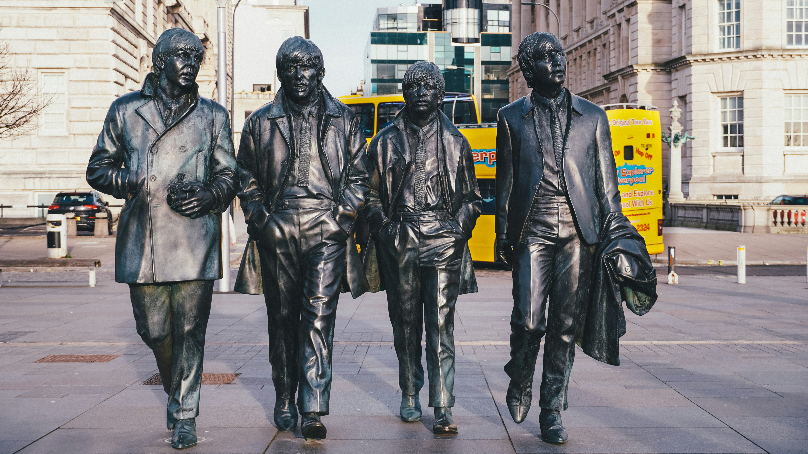

The Beatles, 1960'ların başında İngiltere'nin Liverpool kentinde kurulan ve kısa sürede tüm dünyayı etkisi altına alan bir rock grubudur. Grup, müzik tarihinde devrim yaratarak, pop ve rock müziğinin seyrini değiştirdi.
The Beatles, 1960 yılında kurulmadan önce, John Lennon ve Paul McCartney'nin liderliğinde The Quarrymen adlı bir grup vardı. George Harrison ve Ringo Starr'ın da katılımıyla, The Beatles adı altında 1962'de ilk single'ları "Love Me Do"yu yayımladılar. Şarkı İngiltere listelerinde başarı sağladı ve grup hızla ün kazanmaya başladı. 1963'te yayımlanan "Please Please Me" albümü, İngiltere'de büyük bir başarı elde etti ve "Beatlemania" olarak adlandırılan dünya çapında bir hayran kitlesi dalgasını başlattı.
The Beatles, yalnızca müzikteki başarılarıyla değil, aynı zamanda toplumsal ve kültürel alandaki etkileriyle de tanınır. Grubun müziği, rock'n'roll'un temel unsurlarını alıp üzerine deneysel ve yenilikçi öğeler ekleyerek gelişti. Özellikle 1965'te yayımlanan "Rubber Soul" albümü ve 1966'da yayımlanan "Revolver" albümleri, grubun müzikal anlamda sınırları zorladığı ve farklı tarzlara yöneldiği dönemin başlangıcını işaret eder. 1967'de yayımlanan "Sgt. Pepper's Lonely Hearts Club Band" albümü ise, rock müzik tarihinin en önemli albümlerinden biri olarak kabul edilir ve The Beatles'ın müzikal yaratıcılığının zirvesi olarak anılır.
1970 yılında grubun dağılması, hayranları arasında büyük bir hayal kırıklığı yaratmasına rağmen, her bir üye solo kariyerlerinde de büyük başarılara imza attı. John Lennon'ın aktivist kimliği ve solo eserleri, Paul McCartney'nin Wings ile olan başarıları, George Harrison'ın ruhani arayışları ve solo çalışmaları, Ringo Starr'ın müzik ve oyunculuk alanlarındaki kariyeri, The Beatles'ın mirasını yaşatmaya devam etti.
The Beatles, modern müziğin şekillenmesinde büyük rol oynayan bir grup olarak, hem sanatçı hem de kültürel ikonlar olarak anılmaya devam ediyor. Müziğin evrensel diliyle, nesiller boyu süren etkileriyle ve müziğin yanı sıra moda, sanat, film ve toplumsal değişimler üzerindeki etkileriyle, The Beatles, tarihin en büyük ve en önemli müzik gruplarından biri olarak kabul edilmektedir.
The Beatles, kariyerleri boyunca 12 stüdyo albümü, 13 EP (Extended Play) ve 22 single yayımlamıştır. İşte The Beatles'ın stüdyo albümleri ve bunların yayımlanma tarihleri:
| Albüm İsmi | Yayımlanma tarihi |
|---|---|
| Please Please Me | 22 Mart 1963 |
| With the Beatles | 22 Kasım 1963 |
| A Hard Day's Night | 10 Temmuz 1964 |
| Beatles for Sale | 4 Aralık 1964 |
| Help! | 6 Ağustos 1965 |
| Rubber Soul | 3 Aralık 1965 |
| Revolver | 5 Ağustos 1966 |
| Sgt. Pepper's Lonely Hearts Club Band | 26 Mayıs 1967 |
| Magical Mystery Tour | 27 Kasım 1967 |
| The Beatles (White Album) | 22 Kasım 1968 |
| Yellow Submarine | 13 Ocak 1969 |
| Abbey Road | 26 Eylül 1969 |
| Let It Be | 8 Mayıs 1970 |

Beatles üyelerinin yer aldığı Liverpool'daki heykel